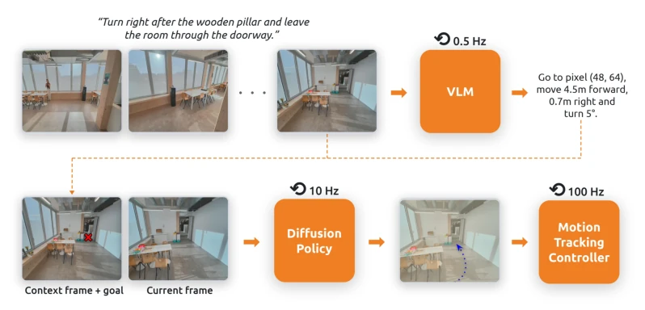
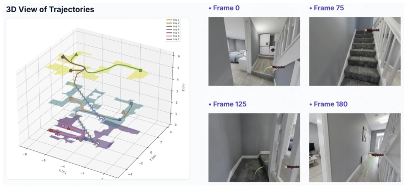
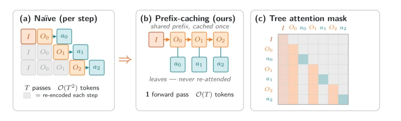
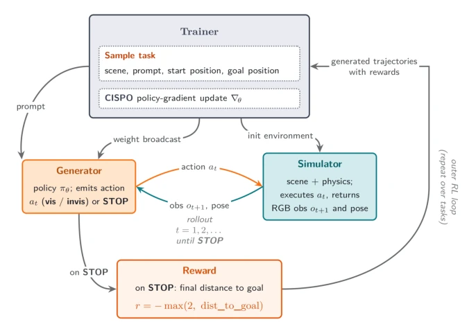
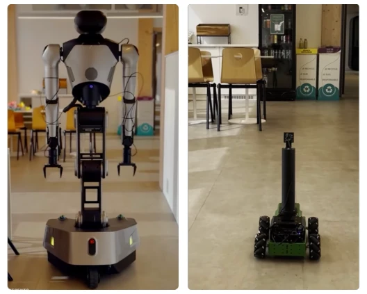

This Robostral Navigate is quite interesting; an 8B VLM with monocular RGB can outperform depth cameras and multi-view systems, sounding like using "pointing" instead of "ranging". Although the idea of "point coordinates" is not new, combined with prefix caching training, reducing training time from months to days, this is true cost reduction and efficiency enhancement. However, the 2.4M trajectories rely entirely on simulation; although the authors demonstrated deployment on Galaxea and Hiwonder, the Sim2Real gap was glossed over lightly, after all, there is always a gap between the physics engine in the simulator and reality. SOTA results are indeed impressive, but the 2026 paper date makes one suspect if this is a "prophecy" from the future. In short, this is a work that finds a balance point between efficiency and performance, suitable for teams that do not want to spend money on hardware, but do not expect it to directly solve all complex physical interaction problems.
研究动机Motivation
具身导航的核心痛点在于“泛化性”与“成本”的矛盾。现有 SOTA 系统如 Qwen-RobotNav (Zhang et al., 2026) 和 OmniNav (Xue et al., 2026) 严重依赖深度传感器、LiDAR 或多相机 rig，这直接限制了硬件兼容性并推高了部署成本。Zhang et al. (2025a,b) 的工作虽然性能强，但需要特定环境校准，增加了维护负担。随着通用机器人需要适应多样硬件 (Zitkovich et al., 2023)，单纯提升精度已不够，必须找到一种最小化传感器假设、能在仿真中高效训练且跨平台通用的方案。Robostral Navigate 正是为了解决这个可扩展性难题，试图证明单目 RGB 配合高效训练也能达到甚至超越多模态系统的效果，减少了对昂贵传感器的依赖。
The core pain point of embodied navigation lies in the contradiction between "generalization" and "cost". Existing SOTA systems such as Qwen-RobotNav (Zhang et al., 2026) and OmniNav (Xue et al., 2026) heavily rely on depth sensors, LiDAR, or multi-camera rigs, which directly limits hardware compatibility and drives up deployment costs. Although the work of Zhang et al. (2025a,b) has strong performance, it requires specific environment calibration, increasing maintenance burden. As general-purpose robots need to adapt to diverse hardware (Zitkovich et al., 2023), simply improving accuracy is no longer enough; a solution that minimizes sensor assumptions, can be trained efficiently in simulation, and is cross-platform generalizable must be found. Robostral Navigate is precisely to solve this scalability challenge, attempting to prove that monocular RGB combined with efficient training can also achieve or even exceed the effects of multimodal systems, reducing dependence on expensive sensors.
Overall adopts a hierarchical architecture: 8B VLM is responsible for high-level planning (0.5Hz), 121M diffusion policy is responsible for low-level control (10Hz). VLM inputs language instructions and RGB streams, outputs "pointing" (image coordinates) or "displacement" (metric coordinates) as waypoints; this image space expression naturally decouples camera intrinsics and robot geometry, facilitating cross-robot deployment. In training, the core innovation is Prefix-caching, utilizing tree attention masks to pack the entire trajectory as a single sequence, avoiding redundant encoding, token count reduced by 22 times. Data generation is conducted in Habitat simulation, randomizing robot height and camera angles to enhance generalization. Finally, online reinforcement learning is performed through CISPO (Chen et al., 2025), optimizing for SFT failure trajectories, solving exposure bias problems. Reward function designed as negative distance to goal, encouraging fast arrival and stopping. Diffusion policy input includes VLM prediction, context frames, and current frame, outputs action blocks.

Figure 1: System Architecture. Given a natural language instruction and a stream of RGB observations, the VLM predicts the next waypoint at 0.5 hertz via pointing, metric displacement and orientation upon arrival. When the target lies outside the field of view, pointing is omitted. A diffusion policy takes the waypoint, the context frame (frame at which the waypoint has been inferred) and the current frame to produce a dense trajectory at 10 hertz. Finally, a motion-tracking controller turns this trajectory into high-frequency actuator torques.

Figure 3: Example of training data. Left: 3D navigable area and sampled trajectories for a given scene. Right: Four frames from a cross-floor trajectory with future positions in-painted in green and waypoint in red.

Figure 4: Comparison of (a) naive representation with our (b) prefix-caching. (c) demonstrates the tree attention mask with prefix-tree representation; I is the instruction, Oi is the ith observation/image, ai is the action at the ith time step.

Figure 5: Overview of our online reinforcement learning pipeline. The trainer orchestrates the prompt sampling, physical simulator, and action generator (vLLM) in an asynchronous loop, updating the policy via CISPO using the −max(2, dist_to_goal) reward signal upon episode termination.
In R2R-CE and RxR-CE benchmark tests, Robostral Navigate achieved SOTA results. Success rate reached 77.4% on R2R-CE, 10.5 points higher than the best monocular method Qwen-RobotNav-4B, even surpassing the depth-camera-dependent Qwen-RobotNav-8B (72.1%). Success rate on RxR-CE is 75.1%, SPL reaches 68.7%. Ablation experiments show the online RL phase brought about a 4% success rate improvement, turning the policy from fragile to robust. Although using monocular RGB, its path efficiency (SPL) still outperforms some depth-assisted models. This proves that under large-scale simulation data combined with efficient training, monocular solutions are fully competitive. In real robot deployment, model weights remained unchanged, only low-level controller adjusted, validating cross-platform generalization capability.

Figure 2: Cross-robot deployment of Robostral Navigate on the Galaxea R1 (left) and Hiwonder JetAuto (right). The two platforms differ substantially in robot morphology, camera height, camera configuration, and base geometry. Both deployments use the same Robostral Navigate vision-language model and diffusion policy weights, with only the low-level platform controller differing between robots.